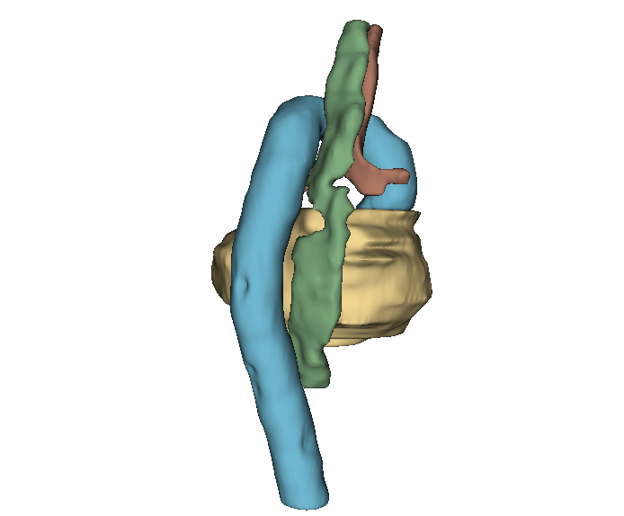
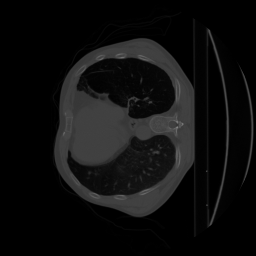
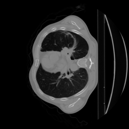
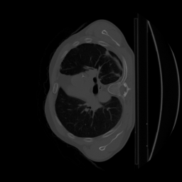
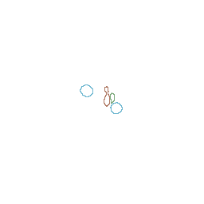
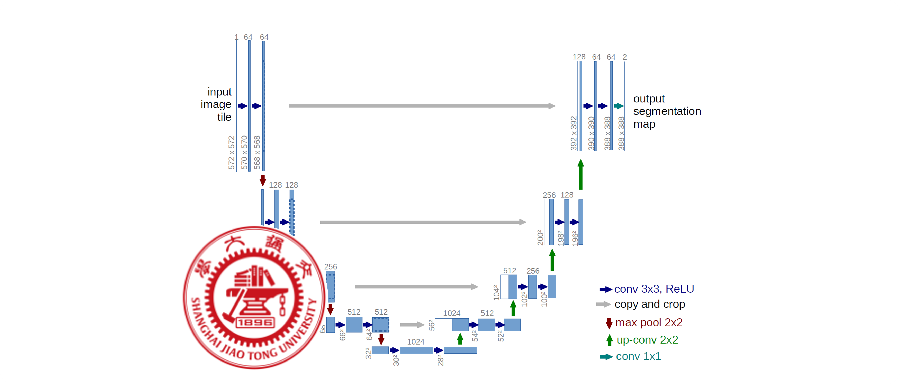
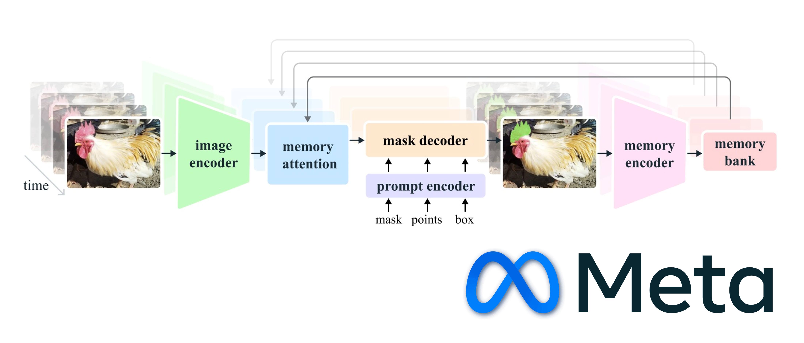

Raoul Ritter, Lisa van Ommen, Pepijn de Reus, Didier Merk
Medical Imaging Segmentation

The SegTHOR challenge is a prominent benchmark in medical imaging, focused on the complex task of segmenting four thoracic organs at risk in CT scans: The esophagus, heart, trachea and aorta.
Accurate organ segmentation is critical in fields like radiotherapy and diagnostic imaging, where precision directly impacts patient outcomes. This challenge encourages participants to explore advanced machine learning models and techniques to push the boundaries of segmentation performance.
In this short overview, we'll walk through the methods our team applied, using models such as ENet, VM-UNet, and SAM2, and how each technique, from data preprocessing to post-processing, shaped our results. Instead of a deep technical dive, this summary aims to provide a more interactive experience, allowing you to see firsthand how these methods impacted our segmentation results.
Computed Tomography (CT) Scans
The SegTHOR dataset consists of 60 Computed Tomography (CT) scans. CT-scans provide detailed cross-sectional images of the body by combining multiple X-rays taken from different angles. Each CT scan is represented as a series of 2D slices, which can be converted into NumPy arrays. These arrays, representing tissue densities, can serve as input for a neural network for example.
In addition, the four thoracic organs of interest in these 60 CT-scans were manually annotated by an experienced radiotherapist. These annotations served as the ground truths of our project. The goal of this challenge is to train a model that is able to segment organs as closely to these ground truths as possible.
A unique aspect of this challenge was that the ground truth segmentations for the heart were intentionally misaligned. In most segmentation challenges, the ground truths accurately represent the organs, but here we had to correct the provided data.
Our solution focused on Patient 27, whose CT-scan is pictured on the right. This patient was the only case where both the real and transformed ground truths were available. By comparing these two, we identified the affine transformation (translation, scaling, and rotation) that had been applied. Using this, we reversed the transformation for all other patients, ensuring our model was trained on corrected data.
Additional Preprocessing
1. Voxel Clipping
This technique limits extreme voxel intensities by setting them to a threshold, reducing noise and focusing the analysis on important image details.
- CT-scan voxel intensities are measured in Hounsfield Units (HU).
- Values below -1000HU (air) or above 1000HU (bone) likely represent noise.
- We clipped values outside this range to enhance focus on meaningful structures.
2. Image Rescaling
Rescaling adjusts voxel dimensions to ensure uniform spacing across scans, making the images consistent for accurate analysis.


- We rescaled all scans to ensure each voxel represents a standardized size of 0.977mm x 0.977mm x 2.5mm.
- This standardization improves consistency, allowing for better analysis and comparison across images.
3. Intensity Normalization
Intensity normalization standardizes voxel values across slices and patients, reducing variability from different scanners for improved model consistency.
- We computed the z-score for each voxel: z = (x - μ) / σ, where:
- x is the voxel intensity
- μ is the slice mean intensity
- σ is the intensity standard deviation
- This enhances contrast, making CT scan details easier to visualize across different slices.
We first corrected the heart segmentation misalignment to ensure reliable training data. Then, we applied voxel clipping to focus on key details, rescaling to standardize dimensions, and intensity normalization to harmonize scan values across slices and patients.
The visualizations on the right show these improvements; on the left is the corrected heart segmentation, while the images on the right highlight cleaner, more consistent scans after preprocessing. These adjustments improved the accuracy of our segmentation results.
Model Training and Inference


Slice 0129
To accurately segment organs from CT scans, you can "train" a deep learning model. In training, the model learns patterns from labeled data (in this case the professionally labeled CT scans), and once trained, it can make predictions on new, unseen data. For the SegTHOR challenge, we used three models: ENet as the baseline, along with VM-UNet and SAM2, which are state-of-the-art in medical image segmentation.
To get the best out of these models, we applied different configurations for each one. We experimented with data augmentation (rotating, flipping, and scaling CT scans), tuning hyperparameters like learning rate, and using post-processing to smoothen and fill the output. These techniques led to 24 different trained models in total, and the full details can be found in our paper.
On the left, you can see the visual progress for Patient 2, where the model improves its segmentation with each training epoch. This shows how the models learned to find the best weights under specific settings, refining their performance step by step.
SegTHOR Pipeline
ENet (Baseline)

- Lightweight architecture optimized for efficient segmentation tasks.
- Exceptionally fast inference time, ideal for real-time processing.
- Balanced trade-off between accuracy and computational efficiency, making it suitable for resource-constrained environments.
VM-UNet

- Enhanced U-Net architecture with improved feature extraction capabilities.
- Optimized for higher accuracy in complex medical image segmentation tasks.
- Incorporates advanced techniques to handle intricate anatomical structures and variations.
SAM2

- Utilizes an advanced self-attention mechanism for context-aware segmentation.
- Demonstrates excellent performance across various medical imaging datasets and modalities.
- Highly robust to input variations, ensuring consistent results across diverse patient data.